Choisir une direction
Voici trois directions possibles pour l'apparence du nouveau site. Toutes reprennent la structure validée dans les wireframes et respectent les contrastes exigés pour l'accessibilité, en thème clair comme en thème sombre. Le client en choisit une ; elle peut être ajustée (une couleur, une police) avant la validation.
Point de départ
| Métier | Association, collectif, action sociale |
|---|---|
| Ton | accueillant, engagé, simple, en langage clair |
| Couleur de marque relevée | #364a6b, accent #fdb544 (contraste sur blanc 1,77:1, insuffisant pour du texte : décliné plus foncé dans les pistes) |
| Polices relevées | Segoe UI |
| Photos | membres et actions réels avec droit à l'image, pas de visage d'enfant sans accord |
| À éviter | chiffres non sourcés ; jargon institutionnel |
Univers
Ce qui fait reconnaître le client, relevé sur son site actuel. La direction fidèle reprend chacun de ces signes ; les deux autres les réinterprètent (même idée, forme renouvelée). Les briques de la boîte à outils sont adaptées à cet univers, jamais montrées telles quelles.
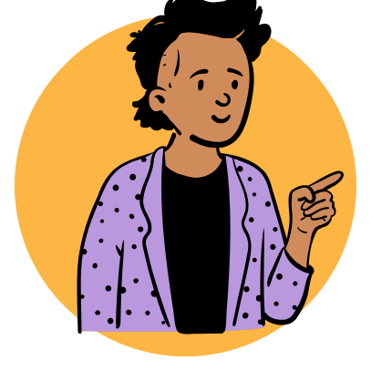
rond de couleur derrière l'image (rgb(253, 181, 68)), l'image déborde de la forme vers le haut et vers le bas (effet à garder : pas de overflow: hidden) 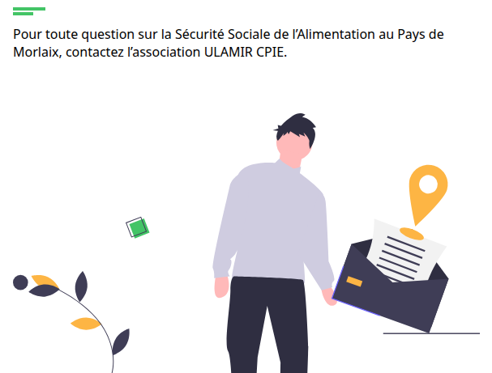
illustration dessinée (SVG) dans le contenu 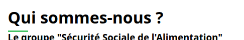
trait sous le titre (rgb(67, 196, 102), 40px × 3px) 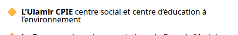
puce en icône (petite image devant chaque élément de liste) 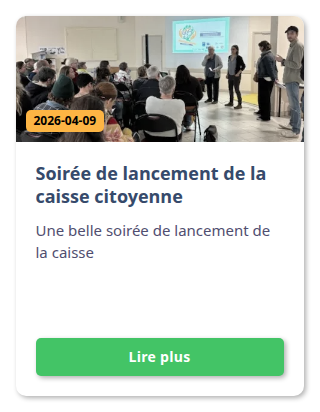
cartes, arrondi 10 px, ombre portée 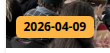
pastille ou étiquette (rgb(253, 181, 68), « 2026-04-09 ») 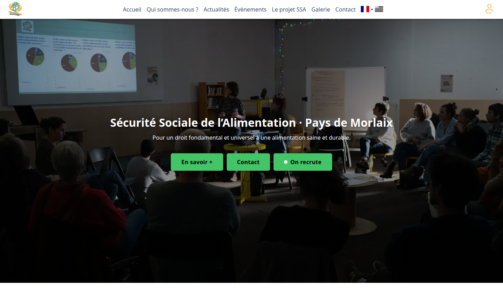
photo en fond du haut de page, sous un voile sombre, titre posé dessus, 90 % de la hauteur de l'écran 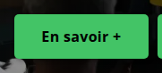
bouton : arrondi 5 px, ombre, fond rgb(67, 196, 102) 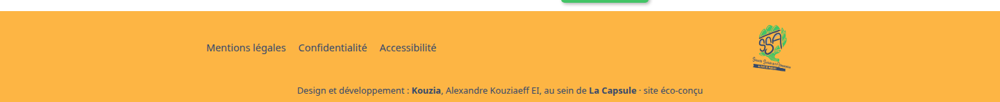
pied de page sur fond de couleur (rgb(253, 181, 68))
Piste 1 : Fidèle
Les couleurs et les polices du site actuel, gardées et rendues conformes : en-tête dans la couleur de la marque, le client reconnaît son site, qui gagne en lisibilité.
| Couleur de marque | #364a6b |
|---|---|
| Accent (liens, boutons) | clair #007d33 · sombre #43c466 |
| Fond | clair #ffffff · sombre #0a1018 |
| Titres | Segoe UI (police du système, aucun fichier) |
| Texte | Segoe UI (police du système, aucun fichier) |
| Arrondis | 0,75 rem |
| Contrastes | 74 paires contrôlées, toutes conformes (marge minimale 2 %) |
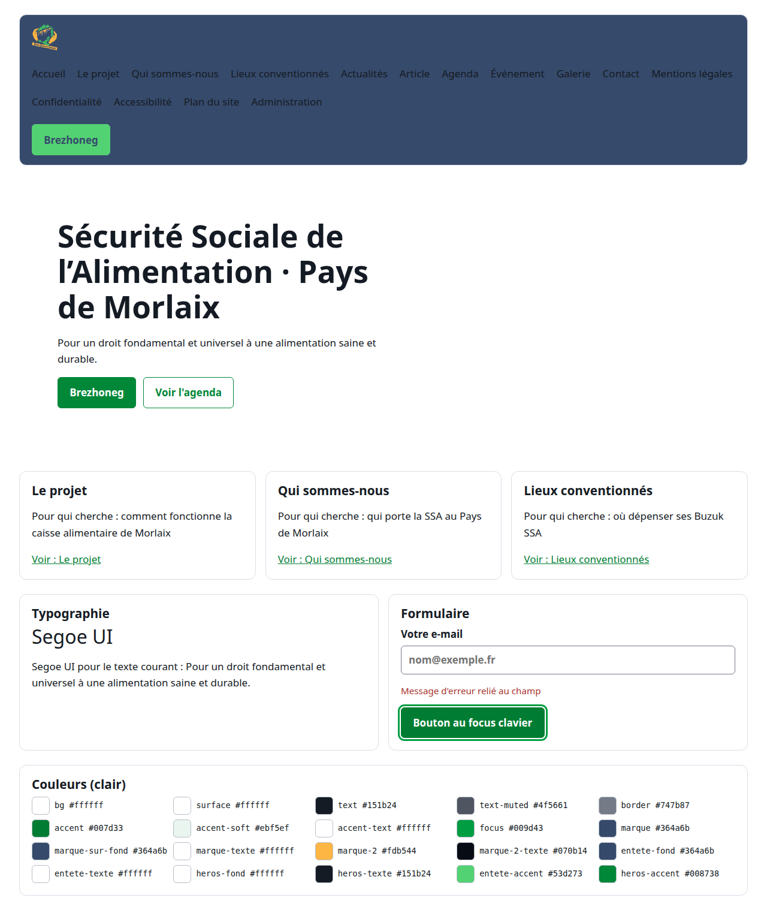
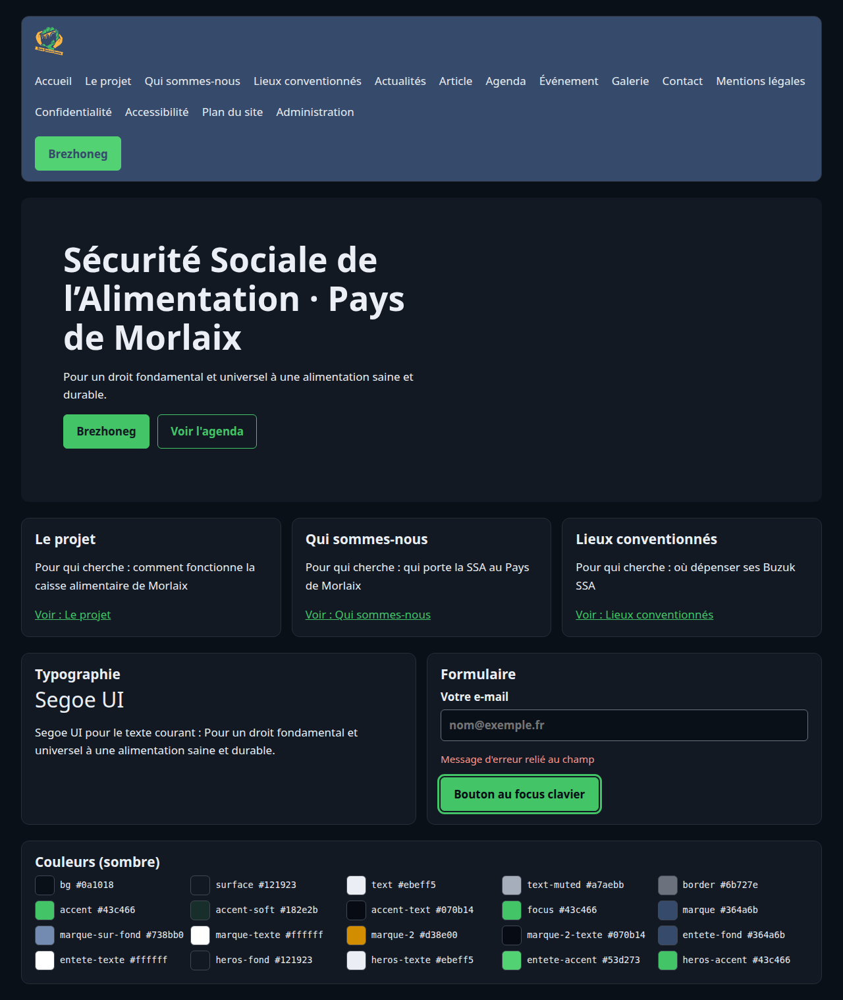
Piste 2 : Modernisée
Les mêmes teintes, utilisées avec retenue sur un fond clair et neutre, une typographie actuelle adaptée au métier (association, collectif, action sociale) et plus d'espace.
| Couleur de marque | #364a6b |
|---|---|
| Accent (liens, boutons) | clair #936200 · sombre #fdb544 |
| Fond | clair #f8fafe · sombre #0a1018 |
| Titres | Outfit (SIL Open Font License 1.1 (Google Fonts)) |
| Texte | Source Sans 3 (SIL Open Font License 1.1 (Google Fonts)) |
| Arrondis | 0,75 rem |
| Contrastes | 74 paires contrôlées, toutes conformes (marge minimale 2 %) |
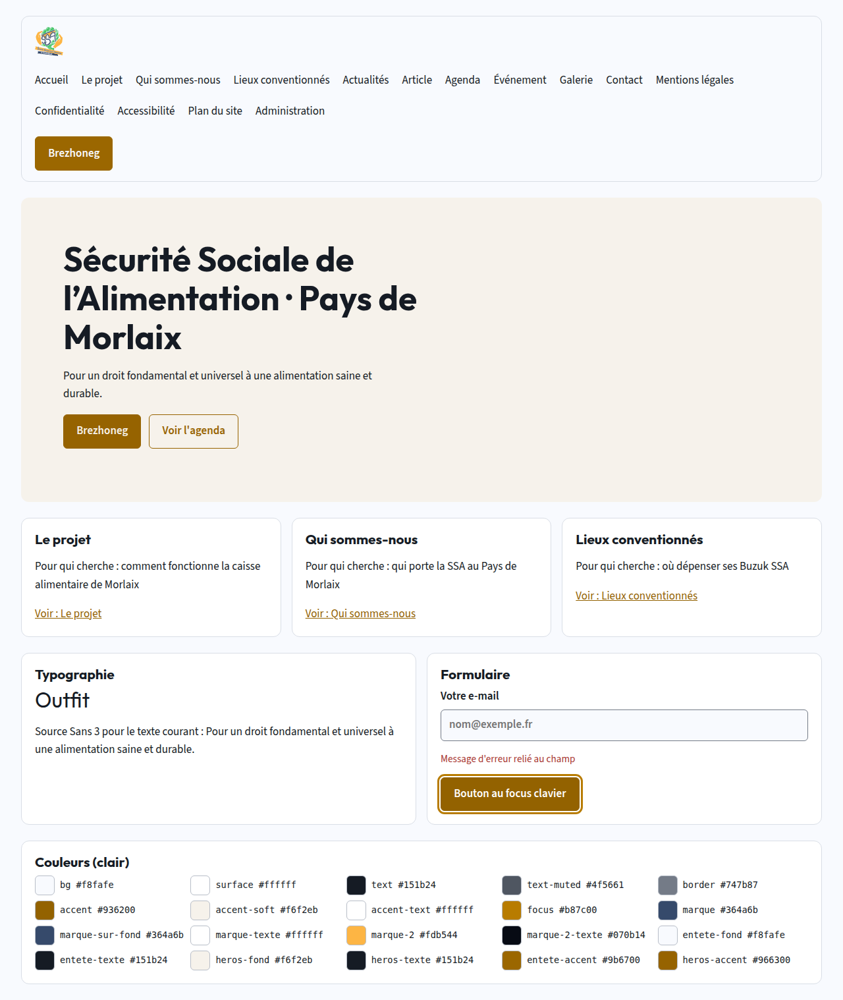
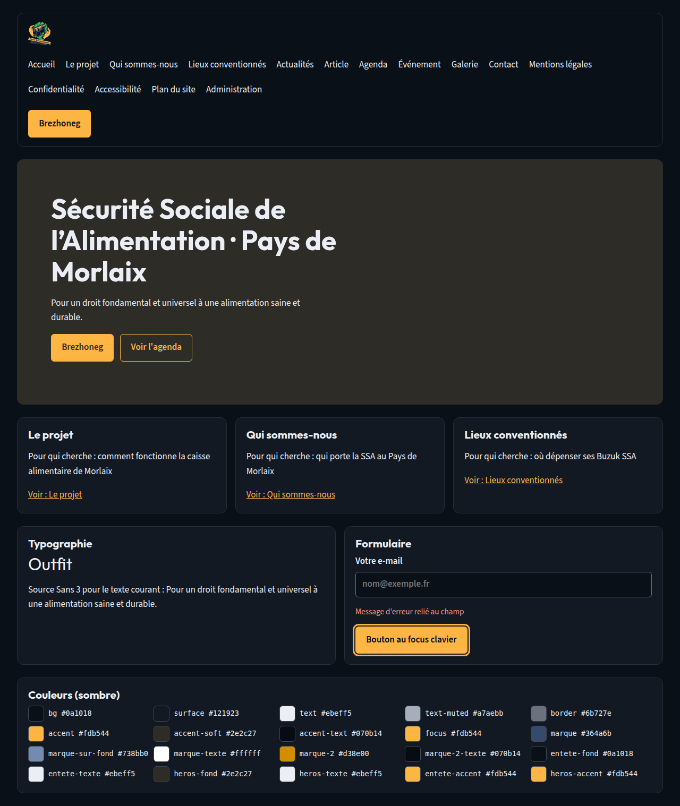
Piste 3 : Contrastée
Un parti pris plus marqué : la couleur de marque en grand dans l'en-tête et le haut de page, une typographie à plus fort caractère, des angles plus nets.
| Couleur de marque | #364a6b |
|---|---|
| Accent (liens, boutons) | clair #936200 · sombre #fdb544 |
| Fond | clair #f8fafe · sombre #0a1018 |
| Titres | Bitter (SIL Open Font License 1.1 (Google Fonts)) |
| Texte | Atkinson Hyperlegible (SIL Open Font License 1.1 (Google Fonts)) |
| Arrondis | 0,375 rem |
| Contrastes | 74 paires contrôlées, toutes conformes (marge minimale 2 %) |
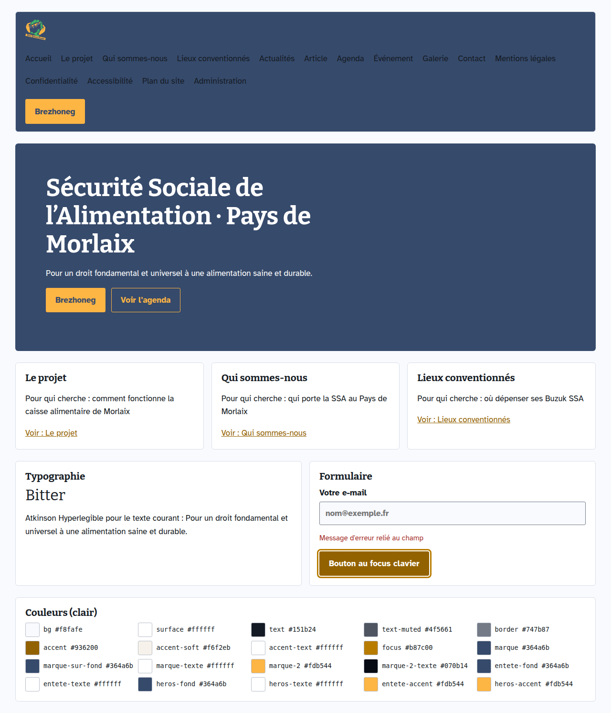
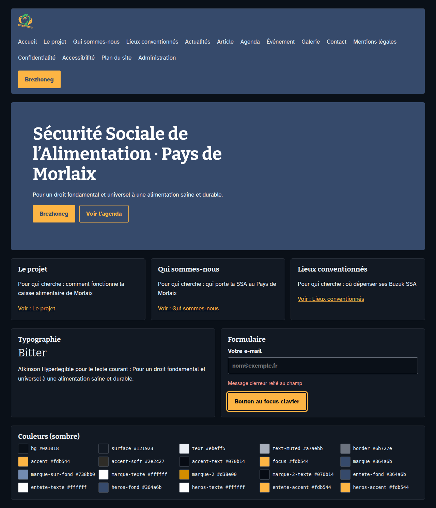
Ce que le client valide
Le numéro de la piste retenue, choisie en voyant ses propres pages, et les ajustements éventuels (une couleur, une police, les arrondis). C'est la validation 3 : ensuite, l'apparence du site ne change plus sans nouvel accord.